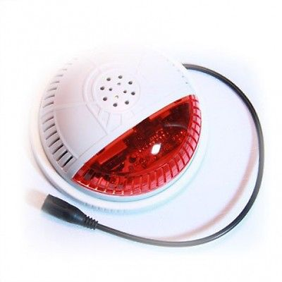
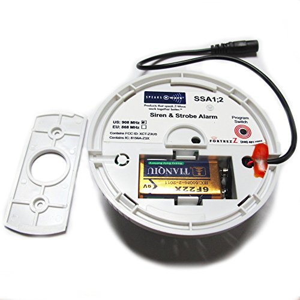

Fortrezz SSA2USR Siren Strobe Alarm Wireless Z-wave Red Lense¶

How to add to VENUS app¶
To add device to VENUS, below actions are required:

- Press “Add button” (button ‘+’) in app
- Reset device: Press Program switch button, and status LED will flash if completed.
- Wait for VENUS scan & detect this device and inform in app
Configuration description¶
- Alarm behaviour setting
Basic set value Alarm behaviour 0 Turn off both strobe light and siren 1 - 33 Turn on strobe light 34 - 66 Turn on siren 67 - 99 or 255 Turn on strobe light and siren at 120 decibel audiable
- Alarm active time
Set value Description 0 - 255
- Alarm time in seconds from activated from receiving trigger.
- Default is 0 (Alarm off immediately when receiving OFF command)